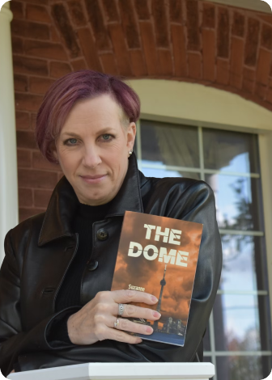

signering
Emma Svenssons signerar sin ny bok “The Dome”.
Den 17 November klockan 18:00 bjuder pärmar & poesi in till mingel och signering. Det kommer gå att köpa boken under kvällen med rabatterat pris!